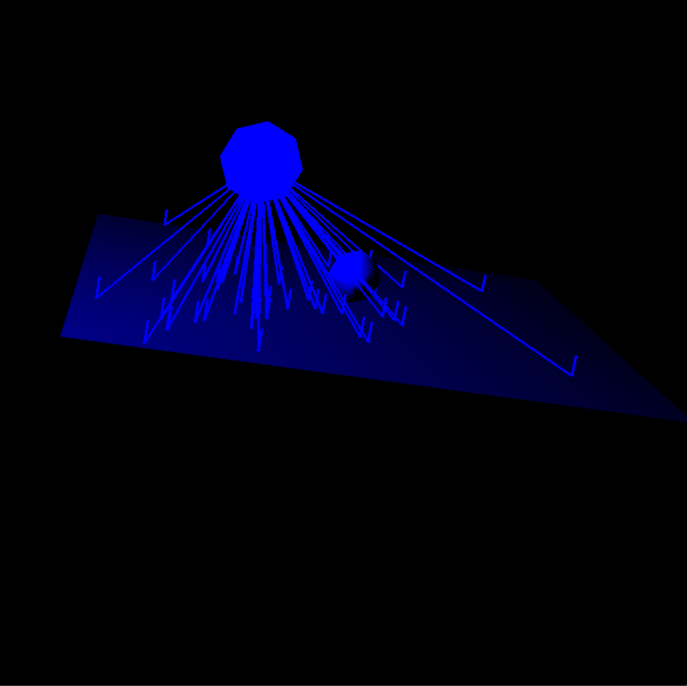
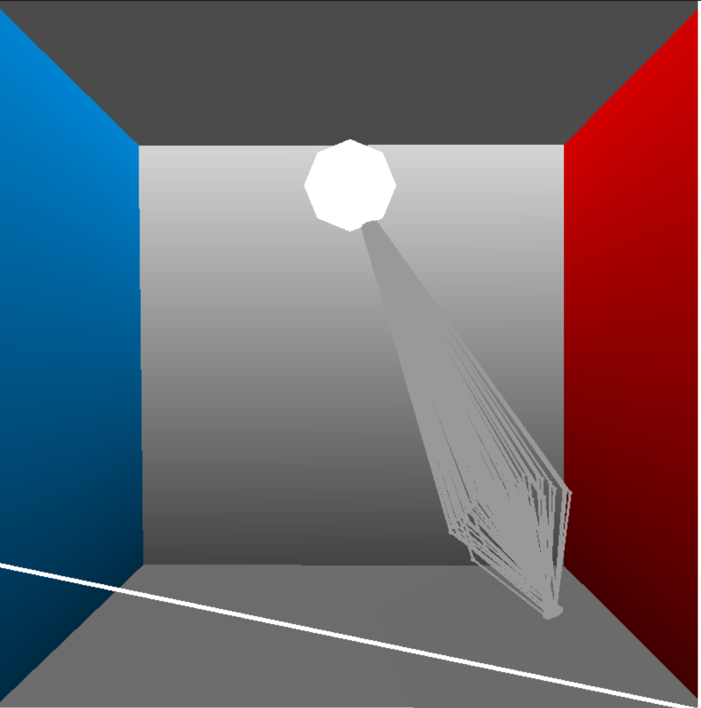
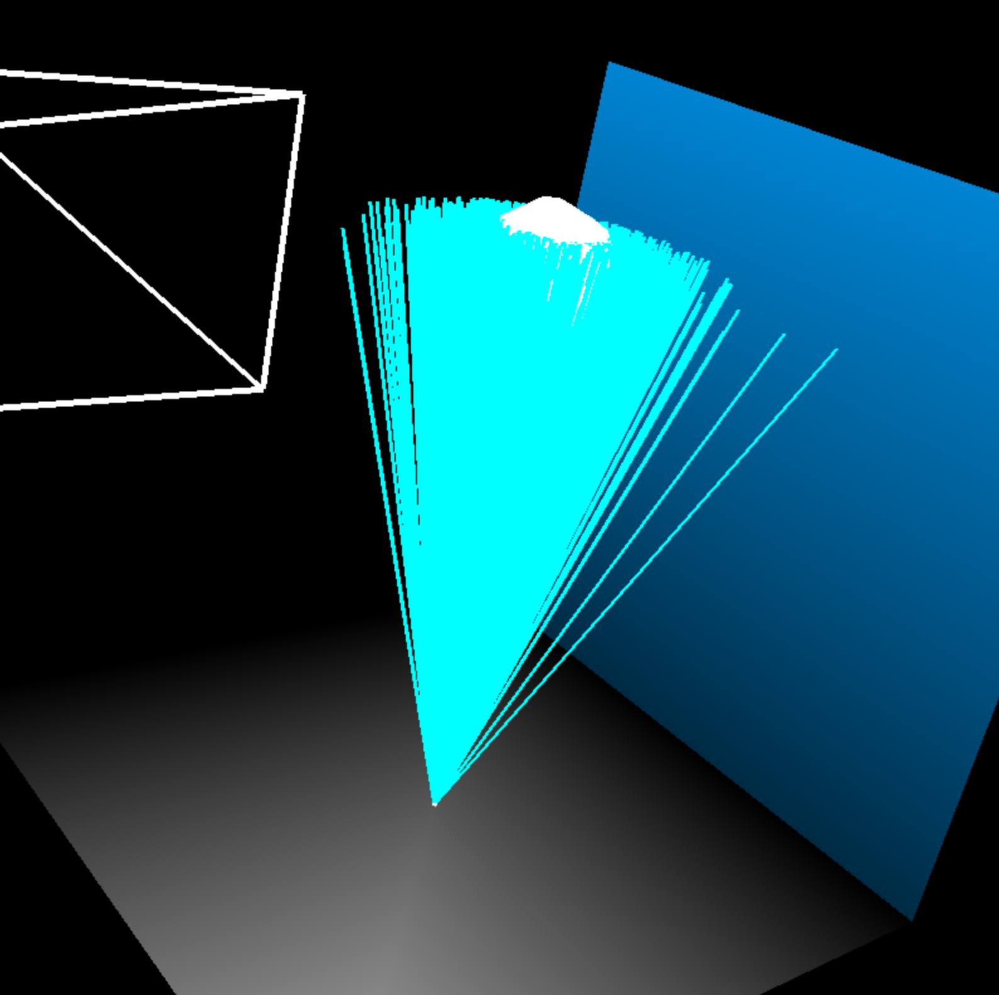

COS 526 Assignment 3: Khaled TinubuPhoton Mapping — Writeup
Photon Mapping
In Photon mapping, "photons" are emitted from light sources and move through a scene, being and reflected, transmitted and absorbed when interacting with surfaces or volumes. Storing information about these interaction can yield information that we can use to better approximate complex effects that standard ray tracing struggles with, such as inderect illumination and caustics. We store these photons in a "photon map" and use it as an estimate for the incoming illumination in the rendering step. This estimate becomes more precise as we include more photons in our estimate. In order to find the photons that are closest to a certain point, we store photons in a kd tree.
Photon Emission

For point lights,the emission direction was the vector from the point source to a point randomly sampled on the unit shpere.
For spot lights, emission is determined in a similar way to point lights except a vector is rejected if the angle between the emission vector and normal exceeds a cutoff value
To make a directional light we first create a disc outside of the scene which is large enough that it's projection cover's the whole scene. We then sample random points on the disc and then emit photons in the given light direction.
For area lights, emission direction was the vector from the a source point, which was a randomly chosen point on the light, to a point randomly sampled on the cosine lobe. Using a cosine lobe instead of a hemisphere minimizes the chance of a photon be emitted perpendicularly to the normal of the are light source, which is not realistic.Photon Scattering
We use importance sampling acording the the Phong BRDF of the scattering surface in order to chose the direction in which a a photon bounces off/through a surface.

Transmission is calulated using snell's law
For diffuse reflection. The photon is bounced in a direction sampled from the cosine lobe, centered about the normal of the intersecting surface

For specular lights, The bounce direction is similar to that of diffuse reflection but we of centering the lobe around the direction of ideal specular relfection and bias the random sampling to choose vectors closer to this direction. The amount of bias is controlled by the specular exponent of the material
Separate Photon Maps
For area lights, emission direction was the vector from the a source point, which was a randomly chosen point on the light, to a point randomly sampled on the cosine lobe. Using a cosine lobe instead of a hemisphere minimizes the chance of a photon be emitted perpendicularly to the normal of the are light source, which is not realistic.
For specular lights, The bounce direction is similar to that of diffuse reflection but we of centering the lobe around the direction of ideal specular relfection and bias the random sampling to choose vectors closer to this direction. The amount of bias is controlled by the specular exponent of the material
To concentrate on capturing caustic effects, we can add a separate caustic photon map, which contains the first diffuse interaction of photons that had only had transmissive/specular interactions beforehand
Radiance Estimation
In our ray tracer, we use russian roulette to trace photon paths throughout to these scene and evalute reflected light using the methods shown in A Practical Guide to Global Illumination using Photon Mapping. One of the advantages of photon mapping is the fact that we can split up the rendering eqation into seprate intergrals and evaluate them seperately as described in the paper. By using the global and caustic photon maps as estimates for indirect and caustic illumination radiance we can seperately evaluate the intergrals for reflected light for these types of illumination. As a result of this we can use a more accurate method, in this case monte carlo path tracing with russian roulette, to evaluate direct illumination and specular/glossy reflection. For specular/glossy reflection, we use importance sampling according to the Phong BRDF of the scattering surface. For direct illumination, instead of intergrating across all direction in the hemisphere, we choose to integrate across the surface of the light as shown in Direct Lighting Calculation by Monte Carlo Integration, adding an extra cosine term and an occlusion term. This allows us to get soft shadows.
Tone Mapping
Once we have a our radiance values for each pixel, we realize that our pixel values are in a hyper dynamic range, with "bright pixels", many orders of magnitude larger than the "darkest pixels". Simply normalizng these values and contructing a png image of your image bitmap will lead to an extremely dark image, as the few high energy pixels dominate. One Solution is to clamp the brightest pixels but this does nothing about the "undere-exposed" dark areas of the image and can create a flat patches of the same brightness around the brightest areas of the image. To get around this problem, we implemented the
Reinhard HDR Tonemapping algorithm
which compresses the luminance values of each pixel with a non linear operator
random sampling was used to deal with aliasing
Images

500 pixels
400 samples per pixel
200 photons per estimate
0.01 search distance
0.03 tone mapping constant
9,000,000 photons in general map
command line arguments:
-resolution: height and width of output image in pixels-num_samples: number of samples per pixel
-general_search_range: maximum knn search distance for general protons as a proprtion of the radius of the bounding box of the scene
-caustic_search_range: maximum knn search distance for caustic protons as a proprtion of the radius of the bounding box of the scene
-num_general_map: number of photons in the general map
-num_caustic_map: number of photons in the caustic map
-num_photon_estimate: number of photons used in for each radiance estimate for a point
-tone_map_const: constant for Reinhard tonemapping
default values:
-resolution: 200 200-num_samples: 20
-general_search_range: 0.07 (if you use less photons or have a bigger scene, increaase the search range)
-caustic_search_range: 0.1 (same advice as general_search_range)
-num_general_map: 500000
-num_caustic_map: 1000000
-num_photon_estimate: 150
-tone_map_const = 0.3 (try varying up to 1.8 and down to 0.05)
Sources:
Using_the_modified_Phong_reflectance_model_for_Physically_based_rendering_
basics-light-measurement
light-intensity-of-an-rgb-value
brdf
reflection_refraction
css
tone mapping